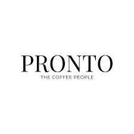

Since 1989 — Brewing Happiness Every Day ☕
Founded in 1989, The Coffee People began as a small neighborhood café with a big dream — to serve the perfect cup of coffee that brings people together.
Over the years, we have grown into a favorite destination for coffee lovers. Our passion for quality beans, freshly prepared food, and warm hospitality has helped us build a loyal community of customers.
At The Coffee People, every cup tells a story of tradition, taste, and dedication.
Our mission is to create a cozy and welcoming space where people can relax, connect, and enjoy freshly brewed coffee and delicious snacks.
To become a trusted café brand known for quality coffee, delightful food, and unforgettable customer experiences.